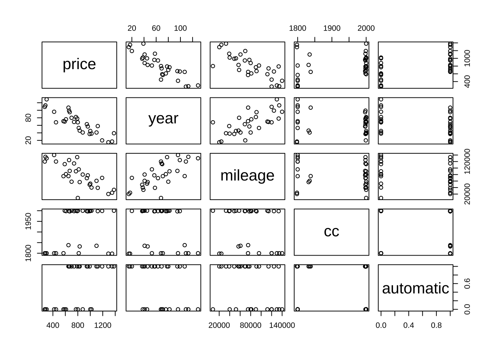
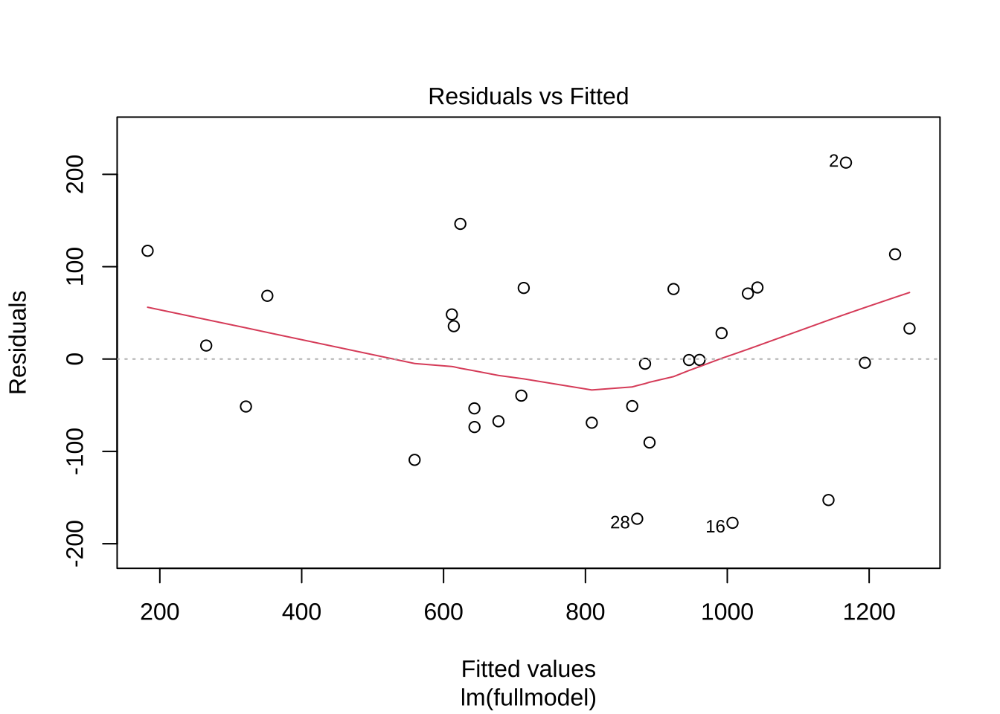

dim(usedcars)[1] 30 5아래 자료는 강근석 와/과 유형조 (2016) 의 예제 3.3에 나온 중고차 가격 자료를 이용한 R 실습입니다.
regbook 패키지를 참고서적 사이트에 따라 설치할 수 있습니다.
중고차 가격에는 어떠한 변수들이 영향을 주는 걸까? 국내의 중고차 사이트에는 기본적으로 연식, 차종, 색, 도어, 엔진, 배기량, 연료, 주행거리 등의 정보가 올라와 있다. 자료 usedcars는 국내 유명 중고차 사이트에서 2007년에 수집한 것으로 가솔린 엔진의 중형차를 대상으로 각 중고차에 대한 가격, 연식, 주행거리, 배기량, 변속기종류를 조사하였다. 예제 3.3에 나온 중고차 가격자료를 이용한 R 실습입니다.
이 자료는 다음과 같은 열로 구성되어 있다.
price : 가격(만원)year : 연식(개월)은 현재까지 몇 개월이 지났는지를 계산하였다.mileage : 주행거리(km)cc: 배기량(cc)automatic : 변속기종류. 수동(0), 자동(1).먼저 자료와 변수의 개수를 알아보고 자료가 어떻게 구성되어 있는지 살펴봅시다.
dim(usedcars)[1] 30 5head(usedcars) price year mileage cc automatic
1 790 78 133462 1998 1
2 1380 39 33000 2000 1
3 270 109 120000 1800 0
4 1190 20 69727 1999 1
5 590 70 112000 2000 0
6 1120 58 39106 1998 1각 변수간의 산점도를 모두 그려보면 변수들간의 관계를 쉽게 파악할 수 있다.
pairs(usedcars)
중고차의 가격을 예측하기 위한 중회귀 모형을 적합해보자. 반응변수는 price(\(y\))이고 설명변수는 year(\(x_1\)), mileage(\(x_2\)), cc(\(x_3\)), automatic(\(x_4\))이다.
\[ \text{price} = \beta_0 + \beta_1 \text{year} + \beta_2 \text{mileage} + \beta_3 \text{cc} + \beta_4 \text{automatic} + \epsilon \]
\[ y_i = \beta_0 + \beta_1 x_{1i} + \beta_2 x_{2i} + \beta_3 x_{3i} + \beta_4 x_{4i} + \epsilon_i \]
중회귀 모형을 적합하느 함수 lm 의 결과는 fit0에 저장한다.
fit0 <- lm(price ~ year + mileage + cc + automatic, usedcars)계획행렬 \(\pmb X\) 은 다음과 같이 구할 수 있다.
model.matrix(fit0) (Intercept) year mileage cc automatic
1 1 78 133462 1998 1
2 1 39 33000 2000 1
3 1 109 120000 1800 0
4 1 20 69727 1999 1
5 1 70 112000 2000 0
6 1 58 39106 1998 1
7 1 53 95935 1800 1
8 1 68 120000 1800 0
9 1 15 20215 1798 1
10 1 96 140000 1800 0
11 1 63 68924 1998 1
12 1 82 90000 2000 0
13 1 76 81279 1998 0
14 1 17 24070 1798 1
15 1 38 40000 2000 0
16 1 46 56887 1832 1
17 1 95 91216 1997 1
18 1 37 48680 1998 1
19 1 68 8000 2000 0
20 1 41 60634 1835 1
21 1 69 114131 1998 1
22 1 71 75000 1800 0
23 1 99 124417 1998 1
24 1 129 130000 1800 0
25 1 57 77559 1997 1
26 1 107 75216 1838 1
27 1 45 52000 2000 0
28 1 80 58000 2000 1
29 1 113 134500 1800 0
30 1 41 80000 2000 0
attr(,"assign")
[1] 0 1 2 3 4fit0 에 저장된 결과를 다음과 같이 함수 str을 이용하여 볼 수 있다.
str(fit0)List of 12
$ coefficients : Named num [1:5] 525.28696 -5.79964 -0.00226 0.38879 165.31263
..- attr(*, "names")= chr [1:5] "(Intercept)" "year" "mileage" "cc" ...
$ residuals : Named num [1:30] 76.98 212.69 -51.4 -4.01 -53.45 ...
..- attr(*, "names")= chr [1:30] "1" "2" "3" "4" ...
$ effects : Named num [1:30] -4407 -1434 -369 -229 419 ...
..- attr(*, "names")= chr [1:30] "(Intercept)" "year" "mileage" "cc" ...
$ rank : int 5
$ fitted.values: Named num [1:30] 713 1167 321 1194 643 ...
..- attr(*, "names")= chr [1:30] "1" "2" "3" "4" ...
$ assign : int [1:5] 0 1 2 3 4
$ qr :List of 5
..$ qr : num [1:30, 1:5] -5.477 0.183 0.183 0.183 0.183 ...
.. ..- attr(*, "dimnames")=List of 2
.. .. ..$ : chr [1:30] "1" "2" "3" "4" ...
.. .. ..$ : chr [1:5] "(Intercept)" "year" "mileage" "cc" ...
.. ..- attr(*, "assign")= int [1:5] 0 1 2 3 4
..$ qraux: num [1:5] 1.18 1.18 1.08 1.03 1.26
..$ pivot: int [1:5] 1 2 3 4 5
..$ tol : num 1e-07
..$ rank : int 5
..- attr(*, "class")= chr "qr"
$ df.residual : int 25
$ xlevels : Named list()
$ call : language lm(formula = price ~ year + mileage + cc + automatic, data = usedcars)
$ terms :Classes 'terms', 'formula' language price ~ year + mileage + cc + automatic
.. ..- attr(*, "variables")= language list(price, year, mileage, cc, automatic)
.. ..- attr(*, "factors")= int [1:5, 1:4] 0 1 0 0 0 0 0 1 0 0 ...
.. .. ..- attr(*, "dimnames")=List of 2
.. .. .. ..$ : chr [1:5] "price" "year" "mileage" "cc" ...
.. .. .. ..$ : chr [1:4] "year" "mileage" "cc" "automatic"
.. ..- attr(*, "term.labels")= chr [1:4] "year" "mileage" "cc" "automatic"
.. ..- attr(*, "order")= int [1:4] 1 1 1 1
.. ..- attr(*, "intercept")= int 1
.. ..- attr(*, "response")= int 1
.. ..- attr(*, ".Environment")=<environment: R_GlobalEnv>
.. ..- attr(*, "predvars")= language list(price, year, mileage, cc, automatic)
.. ..- attr(*, "dataClasses")= Named chr [1:5] "numeric" "numeric" "numeric" "numeric" ...
.. .. ..- attr(*, "names")= chr [1:5] "price" "year" "mileage" "cc" ...
$ model :'data.frame': 30 obs. of 5 variables:
..$ price : int [1:30] 790 1380 270 1190 590 1120 815 450 1290 420 ...
..$ year : int [1:30] 78 39 109 20 70 58 53 68 15 96 ...
..$ mileage : int [1:30] 133462 33000 120000 69727 112000 39106 95935 120000 20215 140000 ...
..$ cc : int [1:30] 1998 2000 1800 1999 2000 1998 1800 1800 1798 1800 ...
..$ automatic: int [1:30] 1 1 0 1 0 1 1 0 1 0 ...
..- attr(*, "terms")=Classes 'terms', 'formula' language price ~ year + mileage + cc + automatic
.. .. ..- attr(*, "variables")= language list(price, year, mileage, cc, automatic)
.. .. ..- attr(*, "factors")= int [1:5, 1:4] 0 1 0 0 0 0 0 1 0 0 ...
.. .. .. ..- attr(*, "dimnames")=List of 2
.. .. .. .. ..$ : chr [1:5] "price" "year" "mileage" "cc" ...
.. .. .. .. ..$ : chr [1:4] "year" "mileage" "cc" "automatic"
.. .. ..- attr(*, "term.labels")= chr [1:4] "year" "mileage" "cc" "automatic"
.. .. ..- attr(*, "order")= int [1:4] 1 1 1 1
.. .. ..- attr(*, "intercept")= int 1
.. .. ..- attr(*, "response")= int 1
.. .. ..- attr(*, ".Environment")=<environment: R_GlobalEnv>
.. .. ..- attr(*, "predvars")= language list(price, year, mileage, cc, automatic)
.. .. ..- attr(*, "dataClasses")= Named chr [1:5] "numeric" "numeric" "numeric" "numeric" ...
.. .. .. ..- attr(*, "names")= chr [1:5] "price" "year" "mileage" "cc" ...
- attr(*, "class")= chr "lm"예를 들어 다음과 같이 회귀계수의 값을 구할 수 있다.
fit0$coefficients (Intercept) year mileage cc automatic
525.286960604 -5.799637101 -0.002262844 0.388787346 165.312632517 함수 lm 의 결과인 fit0 은 class 함수를 사용하면 lm 객체(object) 라는 것을 알 수 있으며 lm 객체에 적용할 수 있는 함수를 찾는방법은 methods 함수를 사용하면 된다.
class(fit0)[1] "lm"methods(class=class(fit0)) [1] add1 addterm alias
[4] anova Anova avPlot
[7] avPlot3d Boot bootCase
[10] boxcox boxCox brief
[13] case.names ceresPlot coerce
[16] confidenceEllipse confint Confint
[19] cooks.distance crPlot crPlot3d
[22] deltaMethod deviance dfbeta
[25] dfbetaPlots dfbetas dfbetasPlots
[28] drop1 dropterm dummy.coef
[31] durbinWatsonTest effects emm_basis
[34] extractAIC family formula
[37] fortify hatvalues hccm
[40] infIndexPlot influence influencePlot
[43] initialize inverseResponsePlot kappa
[46] labels leveneTest leveragePlot
[49] linearHypothesis lmbeta logLik
[52] logtrans mcPlot mmp
[55] model.frame model.matrix ncvTest
[58] nextBoot nobs ols_regress
[61] ols_test_normality outlierTest plot
[64] powerTransform predict Predict
[67] press print proj
[70] qqnorm qqPlot qr
[73] recover_data residualPlot residualPlots
[76] residuals rpredict rstandard
[79] rstudent S show
[82] sigmaHat simulate slotsFromS3
[85] spreadLevelPlot stdcoef sumary
[88] summary symbox variable.names
[91] vcov vif
see '?methods' for accessing help and source codelm 객체에 적용할 수 있는 함수는 summary, anova, predict, plot 등이 있다.
함수 summary 는 각 회귀계수의 추정값과 가설 \(H_0: \beta_k=0\)에 대한 t-검정 결과를 보여준다. 또한 결정계수 \(R^2\)도 구해준다.
summary(fit0)
Call:
lm(formula = price ~ year + mileage + cc + automatic, data = usedcars)
Residuals:
Min 1Q Median 3Q Max
-177.35 -63.91 -0.99 70.34 212.69
Coefficients:
Estimate Std. Error t value Pr(>|t|)
(Intercept) 5.253e+02 3.998e+02 1.314 0.200823
year -5.800e+00 9.283e-01 -6.247 1.55e-06 ***
mileage -2.263e-03 7.211e-04 -3.138 0.004324 **
cc 3.888e-01 2.022e-01 1.923 0.065958 .
automatic 1.653e+02 3.986e+01 4.147 0.000339 ***
---
Signif. codes: 0 '***' 0.001 '**' 0.01 '*' 0.05 '.' 0.1 ' ' 1
Residual standard error: 101.1 on 25 degrees of freedom
Multiple R-squared: 0.9045, Adjusted R-squared: 0.8892
F-statistic: 59.21 on 4 and 25 DF, p-value: 2.184e-12위의 결과로 다음과 같은 추정값과 통계량을 알 수 있다.
Estimate : 회귀계수의 추정값Std. Error : 회귀계수의 표준오차t value : t-검정 통계량Pr(>|t|) : p-valueMultiple R-squared : 결정계수 \(R^2\)Adjusted R-squared : 수정된 결정계수 \(R_{adj}^2\)F-statistic : F-검정 통계량p-value : F-검정의 p-valueResidual standard error : 오차항의 표준편차에 대한 추정값 (\(\sqrt{MSE}= \hat \sigma\))degrees of freedom : 잔차 제곱합의 자유도 (\(n-p\))각 회귀 계수에 대한 95% 신뢰구간은 함수 confint로 구할 수 있다.
confint(fit0) 2.5 % 97.5 %
(Intercept) -2.981256e+02 1.348699e+03
year -7.711605e+00 -3.887669e+00
mileage -3.748021e-03 -7.776672e-04
cc -2.763072e-02 8.052054e-01
automatic 8.322275e+01 2.474025e+02예를 들어 설명변수 cc 에 대한 회귀계수의 추정값은 0.3888 이며 배기량이 1cc 증가할 때 가격은 약 0.4만원, 즉 4000원이 평균적으로 증가한다고 해석할 수 있다.
설명변수 cc 에 대한 회귀계수가 0인지 검정하기 위해서는 t-검정 통계량을 구하고 p-value를 구하면 된다. t-검정 통계량은 다음과 같이 주어지며
\[ t_0 = \frac{\hat \beta_3}{SE(\hat \beta_3)} = \frac{0.3888}{0.2022} = 1.923 \]
p-값은 0.0659852 이다. 즉 귀무가설 \(H_0: \beta_k =0\) 을 기각할 수 없다.
참고로 p-value 를 이용하지 않고 t-검정 통계량을 이용하여 유의수준 \(\alpha=0.05\)에서 검정할 수 있다. 즉, 자유도가 25인 것을 이용하면 기각역 \(t_{0.975, 25} = 2.059539\) 이므로 \(|t_0| < t_{0.975, 25}\) 이므로 귀무가설을 기각할 수 없다.
qt(0.975, 25)[1] 2.059539회귀계수에 대한 95% 신뢰구간은 (-2.763072e-02, 8.052054e-01) 으로 0을 포함하고 있다.
이제 모든 설명변수에 대한 F-검정을 해보자. 즉, 모든 설명변수의 계수가 0인지 검정해보자. 즉 귀무가설은 다음과 같다.
\[ H_0: \beta_1 = \beta_2 = \beta_3 = \beta_4 = 0 \] 함수 summary 의 결과에서 F-statistic의 값을 보면 \(F_0=59.21\) 이고 p-value는 2.184e-12 이다. 즉 귀무가설을 기각할 수 있다. 즉, 적어도 하나의 설명변수는 반응변수에 영향을 준다고 해석할 수 있다.
참고로 p-value 를 사용하지 않고 F-검정 통계량을 이용하여 유의수준 \(\alpha=0.05\)에서 검정할 수 있다. 즉, 자유도가 4, 25인 것을 이용하면 기각역 \(F_{0.95, 4, 25} = 2.75871\) 이므로 \(F_0 > F_{0.95, 4, 25}\) 이므로 귀무가설을 기각할 수 있다.
qf(0.95, 4, 25)[1] 2.75871자료에 주어진 각 반응변수에 대한 예측값 \(\hat {\pmb y} = \pmb X \hat {\pmb \beta}\)는 함수 predict를 이용한다.
predict(fit0) 1 2 3 4 5 6 7 8
713.0214 1167.3146 321.4025 1194.0114 643.4485 1042.5270 865.9501 559.1876
9 10 11 12 13 14 15 16
1256.9013 351.5409 946.0553 623.6355 677.3900 1236.5788 991.9617 1007.3483
17 18 19 20 21 22 23 24
709.6348 1142.6549 890.3836 1029.0340 808.9611 643.6167 611.6964 182.7813
25 26 27 28 29 30
960.9247 614.4275 924.2101 872.9584 265.3927 884.0490 새로운 자료에 대한 예측값 \(\widehat { E(y|x)}\)은 다음과 같이 데이터프레임을 만들고 예측한다.
nw <- data.frame(year=60, mileage=10000, cc=200, automatic=1)
nw year mileage cc automatic
1 60 10000 200 1predict(fit0, newdata=nw, interval="confidence") fit lwr upr
1 397.7504 -342.6272 1138.128새로운 자료에 대한 예측값(반응변수의평균에 대한 예측값)은 다음과 같이 신뢰구간을 구할 수 있다. 주어진 새로운 설병변수 벡터를 \(\pmb x_0\) 라고 하면 예측값은 다음과 같이 구할 수 있다.
\[ \widehat { E(y|x_0)} = \pmb x_0^T \hat {\pmb \beta} \] 새로운 예측값에 대한 분산은 다음과 같이 구할 수 있다.
\[ \widehat { Var(E(y|x_0))} = \widehat {Var}(\pmb x_0^T \hat {\pmb \beta} ) = \hat \sigma^2 \pmb x_0^T (\pmb X^T \pmb X)^{-1} \pmb x_0 \] 따라서 95% 신뢰구간은 다음과 같이 구할 수 있다.
\[ \widehat { E(y|x_0)} \pm t_{0.975, n-p} \sqrt{\widehat {Var}(E(y|x_0))} \]
새로운 관측값에 대한 예측은 다음과 같이 한다.
predict(fit0, newdata=nw, interval="prediction") fit lwr upr
1 397.7504 -371.3501 1166.851새로운 관측값은 평균이 아닌 특정한 확률변수의 예측값이다. 즉, 예측값에 대한 불확실성에 대하여 오차항의 분산을 더해주어 95% 신뢰구간은 다음과 같이 구할 수 있다.
\[ \widehat { E(y|x_0)} \pm t_{0.975, n-p} \sqrt{\widehat {Var}(E(y|x_0)) + \hat \sigma^2} \]
각 설명변수가 반응변수에 미치는 영향을 알아보기 위해서 가각에 대한 제곱합을 구할 수 있다. 각 설명변수에 대한 제곱합은 순차제곱한(sequential sum of squares)과 편제곱합(partial sum of squares)로 구분할 수 있다.
순차제곱합은 모형에 들어가는 변수의 순서에 따라서 제곱합이 틀려진다.
다음의 예를 보면 두 모형이 같은 변수들로 적합되지만 순서가 달라지면 순차제곱합이 다르다.
model1 <- price ~ year + mileage + cc + automatic
model2 <- price ~ mileage + automatic + cc + year
fit1 <- lm(model1, usedcars)
fit2 <- lm(model2, usedcars)
anova(fit1)Analysis of Variance Table
Response: price
Df Sum Sq Mean Sq F value Pr(>F)
year 1 2056608 2056608 201.2036 1.841e-13 ***
mileage 1 135864 135864 13.2919 0.0012228 **
cc 1 52409 52409 5.1273 0.0324794 *
automatic 1 175828 175828 17.2018 0.0003389 ***
Residuals 25 255538 10222
---
Signif. codes: 0 '***' 0.001 '**' 0.01 '*' 0.05 '.' 0.1 ' ' 1anova(fit2)Analysis of Variance Table
Response: price
Df Sum Sq Mean Sq F value Pr(>F)
mileage 1 1637355 1637355 160.1870 2.274e-12 ***
automatic 1 341741 341741 33.4335 5.006e-06 ***
cc 1 42683 42683 4.1758 0.05168 .
year 1 398929 398929 39.0283 1.552e-06 ***
Residuals 25 255538 10222
---
Signif. codes: 0 '***' 0.001 '**' 0.01 '*' 0.05 '.' 0.1 ' ' 1하지만 회귀계수의 추정량은 동일하다.
summary(fit1)
Call:
lm(formula = model1, data = usedcars)
Residuals:
Min 1Q Median 3Q Max
-177.35 -63.91 -0.99 70.34 212.69
Coefficients:
Estimate Std. Error t value Pr(>|t|)
(Intercept) 5.253e+02 3.998e+02 1.314 0.200823
year -5.800e+00 9.283e-01 -6.247 1.55e-06 ***
mileage -2.263e-03 7.211e-04 -3.138 0.004324 **
cc 3.888e-01 2.022e-01 1.923 0.065958 .
automatic 1.653e+02 3.986e+01 4.147 0.000339 ***
---
Signif. codes: 0 '***' 0.001 '**' 0.01 '*' 0.05 '.' 0.1 ' ' 1
Residual standard error: 101.1 on 25 degrees of freedom
Multiple R-squared: 0.9045, Adjusted R-squared: 0.8892
F-statistic: 59.21 on 4 and 25 DF, p-value: 2.184e-12summary(fit2)
Call:
lm(formula = model2, data = usedcars)
Residuals:
Min 1Q Median 3Q Max
-177.35 -63.91 -0.99 70.34 212.69
Coefficients:
Estimate Std. Error t value Pr(>|t|)
(Intercept) 5.253e+02 3.998e+02 1.314 0.200823
mileage -2.263e-03 7.211e-04 -3.138 0.004324 **
automatic 1.653e+02 3.986e+01 4.147 0.000339 ***
cc 3.888e-01 2.022e-01 1.923 0.065958 .
year -5.800e+00 9.283e-01 -6.247 1.55e-06 ***
---
Signif. codes: 0 '***' 0.001 '**' 0.01 '*' 0.05 '.' 0.1 ' ' 1
Residual standard error: 101.1 on 25 degrees of freedom
Multiple R-squared: 0.9045, Adjusted R-squared: 0.8892
F-statistic: 59.21 on 4 and 25 DF, p-value: 2.184e-12편제곱합은 주어진 설명변수가 설명하는 부분을 다른 변수들로 보정된 제곱합으로 순서에 관계없이 일정하다.패키지 car 에 있는 함수 Anova 를 사용하면 편제곱합을 구할 수 있다.
Anova(fit1, type="III")Anova Table (Type III tests)
Response: price
Sum Sq Df F value Pr(>F)
(Intercept) 17645 1 1.7262 0.2008228
year 398929 1 39.0283 1.552e-06 ***
mileage 100649 1 9.8467 0.0043244 **
cc 37794 1 3.6975 0.0659577 .
automatic 175828 1 17.2018 0.0003389 ***
Residuals 255538 25
---
Signif. codes: 0 '***' 0.001 '**' 0.01 '*' 0.05 '.' 0.1 ' ' 1Anova(fit2, type="III")Anova Table (Type III tests)
Response: price
Sum Sq Df F value Pr(>F)
(Intercept) 17645 1 1.7262 0.2008228
mileage 100649 1 9.8467 0.0043244 **
automatic 175828 1 17.2018 0.0003389 ***
cc 37794 1 3.6975 0.0659577 .
year 398929 1 39.0283 1.552e-06 ***
Residuals 255538 25
---
Signif. codes: 0 '***' 0.001 '**' 0.01 '*' 0.05 '.' 0.1 ' ' 1먼저, 하나의 독립변수 배기량(cc)에 대한 계수가 0인지 검정해보자.
\[ H_0: ~ \beta_3 =0 \]
배기량이 0일 때의 모형을 reducemodel1로 정의하고, 배기량이 0이 아닐 때의 모형을 fullmodel로 정의한다. 두 모형의 결과를 함수 anova를 이용하여 비교한다.
fullmodel <- price ~ year + mileage + cc + automatic
reducemodel1 <- price ~ year + mileage + automatic
fitfull <- lm(fullmodel, data=usedcars)
fitreduce1 <- lm(reducemodel1, data=usedcars)
anova(fitreduce1, fitfull)Analysis of Variance Table
Model 1: price ~ year + mileage + automatic
Model 2: price ~ year + mileage + cc + automatic
Res.Df RSS Df Sum of Sq F Pr(>F)
1 26 293332
2 25 255538 1 37794 3.6975 0.06596 .
---
Signif. codes: 0 '***' 0.001 '**' 0.01 '*' 0.05 '.' 0.1 ' ' 1두 모형의 잔차제곱합은 함수 deviance 를 이용할 수 있으며 구하면 다음과 같다.
deviance(fitfull)[1] 255538.1deviance(fitreduce1)[1] 293331.9따라서 부분 F-검정 통계량은 다음과 같이 구할 수 있다.
\[
F_0 = \frac{(SSE(R) - SSE(F)) / (df_R - df_F)}{SSE(F) / (df_F)} = \frac{(293331.9-255538.1)/(26-25)}{255538.1/(25)} = 3.6975
\] \(F_0\)의 p-value는 0.06596 이다. 즉 유의수준 \(\alpha=0.05\)에서 귀무가설을 기각할 수 없다. 즉 배기량이 0이라는 가설을 기각할 수 없다. 만약 기각역을 사용한다면 \(F_{0.95, 1, 25} = 4.241699\) 이므로 \(F_0 < F_{0.95, 1, 25}\) 이므로 귀무가설을 기각할 수 없다.
qf(0.95, 1, 25)[1] 4.241699하나의 계수에 대한 부분 F-검정은 앞에서 설명한 t-검정으로도 가능하며 부분 F-검정의 결과와 동일하다.
참고로 모형의 잔차제곱합은 summary 함수에서 나오는 Residual standard error의 제곱에 자유도를 곱한값과 같다.
\[ SSE = \hat \sigma^2 (n-p) = MSE (n-p) \]
이제 두 개 이상 의 변수에 대하여 부분 F-검정을 해보자. 설명변수 cc 와 automatic에 대한 계수가 0인지 검정해보자.
\[ H_0: ~ \beta_3 = \beta_4 = 0 \]
reducemodel2 <- price ~ year + mileage
fitreduce2 <- lm(reducemodel2, data=usedcars)
anova(fitreduce2, fitfull)Analysis of Variance Table
Model 1: price ~ year + mileage
Model 2: price ~ year + mileage + cc + automatic
Res.Df RSS Df Sum of Sq F Pr(>F)
1 27 483775
2 25 255538 2 228237 11.165 0.0003429 ***
---
Signif. codes: 0 '***' 0.001 '**' 0.01 '*' 0.05 '.' 0.1 ' ' 1이제 잔차를 이용하여 등분산성에 대한 진단을 실시해 보자. 아래 그림은 x축에 적합값 \(\hat y\)를 두고 y축에 잔차를 두고 그린 그림이다. 즉, 잔차는 적합값에 대한 함수로 그린 그림이다.
잔차가 0을 기준으로 하여 고르게 분포되어 있는지 확인한다. 즉, 잔차가 적합값에 대하여 독립적이고 등분산성을 만족하는지 확인한다. 아래 그림에서는 0을 기준으로 특별한 패턴이 보이지 않으므로 등분산성을 만족한다고 볼 수 있다.
plot(fitfull, which=1)